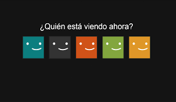
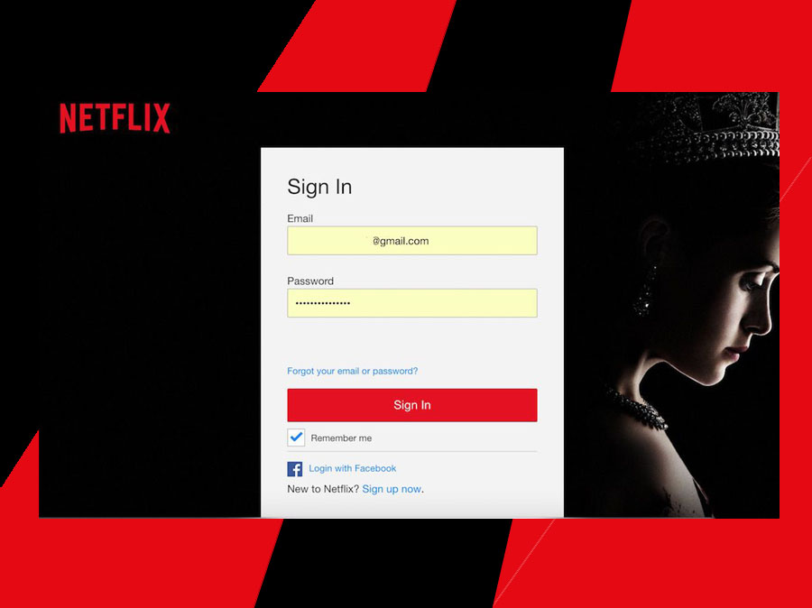

DIGITAL PRODUCTS
📢🔺NORMAS PARA PANTALLAS INDIVIDUALES
#AL momento de adquirir una pantalla con nosotros debe comprender que es una cuenta en común con otras personas. (Otros usuarios independientes a su pantalla).
-Ninguna persona puede ingresar a una pantalla que no sea la que está adquiriendo de no ser así se le notificara al cliente que su servicio será suspendido.

- Los datos suministrados de la cuenta son únicos y no deben ser cambiados por los clientes ( reiterando que es un alquiler de una pantalla, no una cuenta)

-No se puede compatir a personas ajenas al servicio datos de la cuenta por ejemplo; clave, correo electrónico o datos de pagos. De ser así se le notificara al cliente la suspensión del servicio.
-Si el cliente posee más de un dispositivo y desea cambiar de un dispositivo a otro, se le debe indicar al personal de DGJL. Que cambiará de dispositivo a otro diferente y debe cerrar sesión en el dispositivo anterior.
📢🔝DE CUMPLIR CON LAS NORMAS ESTABLECIDAS NO QUEDA MAS NADA QUE DISFRUTAR DE LA PLATAFORMA, NOSOTROS NOS ENCARGAMOS DEL REST0.
© 2020. Todos los derechos reservados.
Maracaibo Venezuela
Maracaibo Venezuela